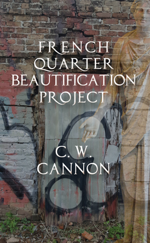

|
 Now available: |
ISBN: 978-1-935084-99-0
ebook ISBN: 978-1-944884-00-0
244 pages: $16.95
February, 2017
[CLICK HERE to go to the Spotify playlist of all the music referenced in the novel, in order. Perfect to listen to while reading.] |
Eons after the destruction of Earth, an ancient god calls up memories of the late 20th Century in New Orleans. Someone or something is compelling him to relive a single night in the French Quarter in the 1980s. The god is Dionysos and his will is to subsume another acolyte into his beastly brood. He narrates the story of this struggle, as his human beloved, a failed classical composer working in a dead-end restaurant, tracks down his genius pianist ex-girlfriend and murderous father for direction. A man and a god wander the streets and bars of the French Quarter, encountering a huge cast of inimitable characters and shadowy leftovers of
gods and music—Bach, Beethoven, Brahms, Messiaen, and scores of others. All the while, Dionysos struggles to unearth the secret of the mortals he loves and loves to hate, in the hope that he will finally be able to understand what he is.
C. W. Cannon's work is simultaneously emblematic of New Orleans and yet so original, strange, brainy and feral that it defies all geography. A novel of ideas, of voice, of sex, of music, and of the sheer wild power of language, this edgy joy/pain-ride over the teetery brink of disaffected youth into adulthood, in a place unlike any other, is from an American writer also unlike any other.
--Gina Frangello, author of A Life in Men
C. W. Cannon's French Quarter Beautification Project is generous, crazy, Rabelasian, ambitious, and phenomenal. Read it and find out what really goes on when gods sink their teeth into men.
--Moira Crone, author of The Not Yet and The Ice Garden
Cannon follows his roaring bayou Gothic Soul Resin, with French Quarter Beautification Project, a wry and rollicking tour of the kind of New Orleans Ignatius Reilly knew, and then some.
--Randy Fertel, author of A Taste for Chaos: The Art of Literary Improvisation